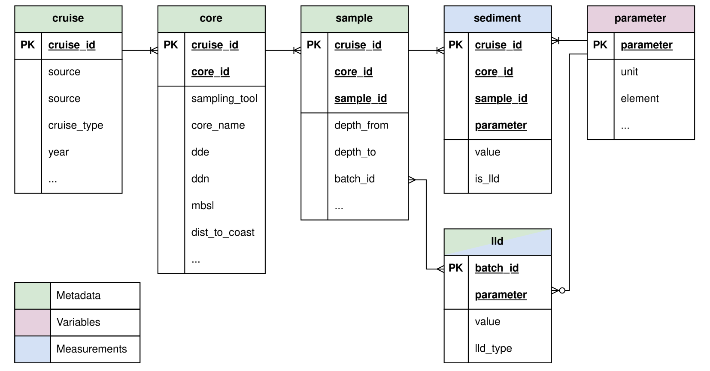

| Name | Data Type | PK | NA Allowed | Description |
|---|---|---|---|---|
| cruise_id | TEXT | ✓ | FALSE | Primary Key. Unique cruise identifier (e.g., MA-2003-209). |
| source | TEXT | FALSE | Data source (Mareano). | |
| cruise_type | TEXT | FALSE | Cruise type (Mareano Cruise/Marine Basecamp Cruise). | |
| year | INTEGER | FALSE | Year of the cruise. | |
| cruise_no | INTEGER | TRUE | Cruise number. | |
| start | TEXT | TRUE | Start date of the cruise | |
| end | TEXT | TRUE | End date of the cruise | |
| start_year | INTEGER | TRUE | Start year of the cruise | |
| start_month | INTEGER | TRUE | Start month of the cruise | |
| start_day | INTEGER | TRUE | Start day of the cruise | |
| end_year | INTEGER | TRUE | End year of the cruise | |
| end_month | INTEGER | TRUE | End month of the cruise | |
| end_day | INTEGER | TRUE | End day of the cruise | |
| area | INTEGER | TRUE | Survey area. | |
| cruise_no2 | INTEGER | TRUE | Alternative cruise number. |
DB Schema
A proposed database design based on Mareano Chemical Data
The page shows the database schema diagram along with table definitions based on the Mareano dataset.
DB Schema Diagram
The proposed database design shown in the ER (Entity Relationship) diagram below contains six tables including three meta (entity) tables, one variable (look-up or reference) table, one fact (measurement) table, and one mixed meta and measurement table.
The columns with PK in the diagram indicate primary keys of the table, which guarantees unique identifications. All tables are connected by one-to-many relationships, except for the LLD table (lld). This table is optional for the parameter table but forms a many-to-many relationship with the sample table.

Warning
A direct SQL join must not be performed between the lld and sample tables due to their many-to-many relationship.
Cruise Table
The cruise table includes Mareano cruise information and is a parent of the core table.
Cruise ID
The ID values in the cruise_id column are formulated as follows:
cruise_id: MA-{year}-{cruise_no}
Table Columns
Core Table
The core table includes sediment core information and is a parent of the sample table.
Core ID
The ID values in the core_id column are formulated as follows:
core_id: {station_no}-{sampling_tool}-{core_name}
The {sampling_tool} part is three characters, padded with zeros, while the {core_name} part is two characters (or “00” if not available).
Table Columns
| Name | Data Type | PK | NA Allowed | Description |
|---|---|---|---|---|
| cruise_id | TEXT | ✓ | FALSE | Primary Key. Foreign Key to Cruise table. |
| core_id | TEXT | ✓ | FALSE | Primary Key. Unique core identifier (e.g., R0625-BC-000-c1). |
| station_no | TEXT | TRUE | Station number. | |
| sampling_tool | TEXT | TRUE | Sampling tool code (BC, MC, GR). | |
| tool_id | TEXT | TRUE | Specific tool identifier. | |
| core_name | TEXT | TRUE | Short core name. | |
| dde | REAL | FALSE | Longitude (Decimal Degrees East). | |
| ddn | REAL | FALSE | Latitude (Decimal Degrees North). | |
| mbsl | REAL | TRUE | Water depth (Meters Below Sea Level). | |
| dist_to_coast | INTEGER | TRUE | Distance to the nearest Norwegian coastline (km). |
Sample Table
The sample table includes specific sediment sample intervals and is a child of the core table.
Sample ID
The ID values in the sample_id column are formulated as follows:
sample_id: {core_name}-{depth_from}-{depth_to}
All parts are two characters, padded with zeros.
Table Columns
| Name | Data Type | PK | NA Allowed | Description |
|---|---|---|---|---|
| cruise_id | TEXT | ✓ | FALSE | Primary Key. Foreign Key to Cruise table. |
| core_id | TEXT | ✓ | FALSE | Primary Key. Foreign Key to Core table. |
| sample_id | TEXT | ✓ | FALSE | Primary Key. Unique sample identifier (e.g., c1_00-02). |
| depth_from | INTEGER | FALSE | Top depth of the sample interval (cm). | |
| depth_to | INTEGER | FALSE | Bottom depth of the sample interval (cm). | |
| batch_id | TEXT | TRUE | Laboratory batch identifier. | |
| sample_id2 | TEXT | TRUE | Alternative sample identifier. |
Parameter Table
The parameter table is a look-up table that contains parameter information for the sediment table.
Table Columns
| Name | Data Type | PK | NA Allowed | Description |
|---|---|---|---|---|
| parameter | TEXT | ✓ | FALSE | Primary Key. Name of the measured parameter (e.g., Se, Cd_a). |
| unit | TEXT | TRUE | Unit of measurement (e.g., mg/kg, %). | |
| element | TEXT | TRUE | Chemical element (e.g., Selenium, Cadmium). | |
| method1 | TEXT | TRUE | Primary analytical method. | |
| method2 | TEXT | TRUE | Secondary analytical method. | |
| institute | TEXT | TRUE | Institute responsible for the analysis. |
Sediment Table
The sediment table contains measurements for all parameters.
Table Columns
| Name | Data Type | PK | NA Allowed | Description |
|---|---|---|---|---|
| cruise_id | TEXT | ✓ | FALSE | Primary Key. Foreign Key to Cruise table. |
| core_id | TEXT | ✓ | FALSE | Primary Key. Foreign Key to Core table. |
| sample_id | TEXT | ✓ | FALSE | Primary Key. Foreign Key to Sample table. |
| parameter | TEXT | ✓ | FALSE | Primary Key. Foreign Key to Parameter table. |
| value | REAL | FALSE | Measured value. | |
| is_lld | INTEGER | FALSE | Flag: 1 if value is Lower Level Detection (LLD), 0 otherwise. |
Note
The is_lld column indicates if the value is LLD (Lower Level of Detection). For example, if the original value is “<5”, the value is set to “5”, but is_lld is set to 1 (TRUE) instead of the default 0 (FALSE).
LLD Table
The lld table stores the Lower Level of Detection (LLD) values for measured elements, defined per sample batch.
Table Columns
| Name | Data Type | PK | NA Allowed | Description |
|---|---|---|---|---|
| batch_id | TEXT | ✓ | FALSE | Primary Key. Batch ID shared with Sample table. |
| parameter | TEXT | ✓ | FALSE | Primary Key. Foreign Key to Parameter table. |
| value | REAL | FALSE | LLD value. |